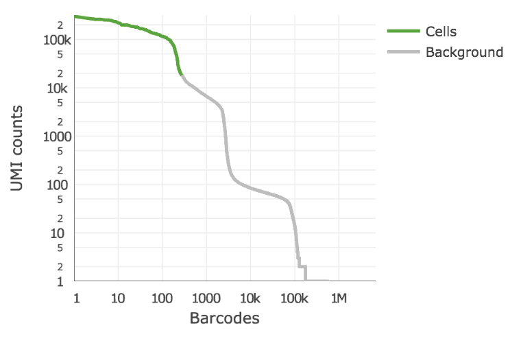
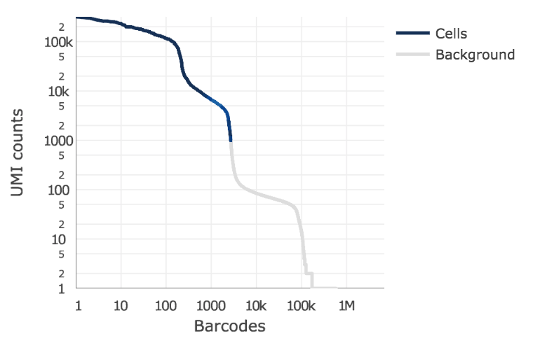

scRNAseq analysis¶
cellranger
count: Counts cell barcodes, aligns to genome/transcriptome, counts UMIs
Example invocation:
$ cellranger count --id=sample345 \
--transcriptome=/opt/refdata-gex-GRCh38-2020-A \
--fastqs=/home/jdoe/runs/HAWT7ADXX/outs/fastq_path \
--sample=mysample \
--expect-cells=1000 \
--localcores=8 \
--localmem=64
Example output:
Outputs:
- Run summary HTML: /opt/sample345/outs/web_summary.html
- Run summary CSV: /opt/sample345/outs/metrics_summary.csv
- BAM: /opt/sample345/outs/possorted_genome_bam.bam
- BAM index: /opt/sample345/outs/possorted_genome_bam.bam.bai
- Filtered feature-barcode matrices MEX: /opt/sample345/outs/filtered_feature_bc_matrix
- Filtered feature-barcode matrices HDF5: /opt/sample345/outs/filtered_feature_bc_matrix.h5
- Unfiltered feature-barcode matrices MEX: /opt/sample345/outs/raw_feature_bc_matrix
- Unfiltered feature-barcode matrices HDF5: /opt/sample345/outs/raw_feature_bc_matrix.h5
- Secondary analysis output CSV: /opt/sample345/outs/analysis
- Per-molecule read information: /opt/sample345/outs/molecule_info.h5
- CRISPR-specific analysis: null
- Loupe Browser file: /opt/sample345/outs/cloupe.cloupe
- Feature Reference: null
- Target Panel File: null
Waiting 6 seconds for UI to do final refresh.
Pipestance completed successfully!
yyyy-mm-dd hh:mm:ss Shutting down.
Saving pipestance info to "tiny/tiny.mri.tgz"
What is actually doing?
Trims reads
Splicing aware alignment to reference genome
GTF file to assign aligned reads to transcripts (see below)
handles reads mapping to >1 locus
How does it handle reads that hit different parts of the genome?
aligned reads for UMI counting, by default, are ’ transcriptomic’ (blue) reads
Often useful an more appropriate to include exonic and intronic aligned reads, too
include-introns: use all but antisense reads for UMI counting
UMI counting:¶
group reads with same cell bc, umi, gene
correct umis (one base off)
cell bc, umi, diff gene -> only keep gene with most support
discard both if tied
all reads with same cell bc, umi, gene are counted as one UMI
number of reads contributing to that UMI are stored in molecule info file (useful later)
Detecting cells¶
EmptyDrops method (Lun et al 2018)
ID true positives with total UMI threshold determine based on total UMIs in top fraction of expected numvber of barcodes
Select set of true negatives and compare complexity of remaining barcodes to it


CellRanger output status (web summary)¶
Sequencing saturation:¶
“If sequencing saturation is at 50%, it means that every 2 new reads will result in 1 new UMI count (unique transcript) detected.”
Calcualted based on the ratio of unique to duplicate UMIs
Post UMI counting analysis¶
Loading data
Standard quality control
Some fun, downstream stuff
Scanpy https://scanpy.readthedocs.io/en/stable/# is the package that will be the workhorse for much of what we do in the class,
[ ]:
%pip install scanpy
[1]:
import pandas as pd
import matplotlib.pyplot as plt
import seaborn as sns
import scanpy as sc
import scipy as sp
import numpy as np
You can download the data used below from here. It is a zip file containing the market matrix files that I showed you in class: genes.tsv, matrix.mtx, and barcodes.tsv. You will need to unzip it, and then change the path argument below so that it is pointing to wherever you unzipped the 3 files.
link to data if not appearing above
[2]:
adata = sc.read_10x_mtx("data/d4/", var_names='gene_symbols',cache=True, gex_only=True)
[3]:
adata
[3]:
AnnData object with n_obs × n_vars = 5405 × 27998
var: 'gene_ids'
What is an anndata?
[4]:
adata.obs
[4]:
| AAACATACCCTACC-1 |
|---|
| AAACATACGTCGTA-1 |
| AAACATACTTTCAC-1 |
| AAACATTGCATTGG-1 |
| AAACATTGCTTGCC-1 |
| ... |
| TTTGACTGAGGCGA-1 |
| TTTGACTGCATTGG-1 |
| TTTGACTGCTGGAT-1 |
| TTTGACTGGTGAGG-1 |
| TTTGACTGTACAGC-1 |
5405 rows × 0 columns
[6]:
adata.obs_names
[6]:
Index(['AAACATACCCTACC-1', 'AAACATACGTCGTA-1', 'AAACATACTTTCAC-1',
'AAACATTGCATTGG-1', 'AAACATTGCTTGCC-1', 'AAACATTGGACGAG-1',
'AAACATTGGGTCTA-1', 'AAACATTGTGACCA-1', 'AAACCGTGAAAGCA-1',
'AAACCGTGAACGTC-1',
...
'TTTCTACTGACAAA-1', 'TTTCTACTGCGGAA-1', 'TTTCTACTTGCATG-1',
'TTTCTACTTGGTAC-1', 'TTTGACTGACTCTT-1', 'TTTGACTGAGGCGA-1',
'TTTGACTGCATTGG-1', 'TTTGACTGCTGGAT-1', 'TTTGACTGGTGAGG-1',
'TTTGACTGTACAGC-1'],
dtype='object', length=5405)
[7]:
adata.var
[7]:
| gene_ids | |
|---|---|
| Xkr4 | ENSMUSG00000051951 |
| Gm1992 | ENSMUSG00000089699 |
| Gm37381 | ENSMUSG00000102343 |
| Rp1 | ENSMUSG00000025900 |
| Rp1-1 | ENSMUSG00000109048 |
| ... | ... |
| AC168977.1 | ENSMUSG00000079808 |
| PISD | ENSMUSG00000095041 |
| DHRSX | ENSMUSG00000063897 |
| Vmn2r122 | ENSMUSG00000096730 |
| CAAA01147332.1 | ENSMUSG00000095742 |
27998 rows × 1 columns
[8]:
adata.var_names
[8]:
Index(['Xkr4', 'Gm1992', 'Gm37381', 'Rp1', 'Rp1-1', 'Sox17', 'Gm37323',
'Mrpl15', 'Lypla1', 'Gm37988',
...
'AC125149.1', 'AC125149.2', 'AC125149.4', 'AC234645.1', 'AC168977.2',
'AC168977.1', 'PISD', 'DHRSX', 'Vmn2r122', 'CAAA01147332.1'],
dtype='object', length=27998)
We can add to obs. For example, I want to add some sample annotation
[11]:
adata.obs['sampleName'] = "mEB_day4"
Let’s look at how the plotting functions work.
Note that, in general, scanpy has 3 classes of functions:
sc.pp: pre-processing functions sc.tl: tools sc.pl: plotting
In the example below, the function highest_expr_genes identifies the n_top genes with highest mean expression, and then passes the expression of these on to sns.boxplot function:
[9]:
sc.pl.highest_expr_genes(adata, n_top=20, )
You can use the **kwrds feature to pass arguments directly through to sns.boxplot as name=value pairs. Here, we set palette and width args:
[12]:
sc.pl.highest_expr_genes(adata, n_top=20, palette="Blues", width=.3)
We can alter some of the default plotting parameters, too, like the resolution
[13]:
sc.settings.set_figure_params(dpi=80)
[14]:
sc.pl.highest_expr_genes(adata, n_top=20, palette="Blues", width=.3)
It is commonplace to calculate the percent of reads that come from mitocondrially-encoded genes and ribosomal genes. ** NB ** In lecture I said that the ribosomal genes shown above are not poly-adenylated. This was incorrect. These transcripts are polyadenylated. Thank you to the student who pointed this out after class!
The reasons that we like to calculate these values is as follows:
mt genes are thought to be relatively more persistent in dying or damaged cells.
ribosomal genes are highly abundant. Thus barcodes in which ribosomal genes make up the vast proportion of UMIs might yield low sensitivity for all other transcripts.
We can readily find both classes genes based on their symbols. Let’s add this to .var:
[15]:
adata.var['mt']= adata.var_names.str.startswith(("mt-"))
print(sum(adata.var['mt']))
13
[16]:
adata.var['ribo'] = adata.var_names.str.startswith(("Rps","Rpl"))
print(sum(adata.var['ribo']))
113
[17]:
adata.var
[17]:
| gene_ids | mt | ribo | |
|---|---|---|---|
| Xkr4 | ENSMUSG00000051951 | False | False |
| Gm1992 | ENSMUSG00000089699 | False | False |
| Gm37381 | ENSMUSG00000102343 | False | False |
| Rp1 | ENSMUSG00000025900 | False | False |
| Rp1-1 | ENSMUSG00000109048 | False | False |
| ... | ... | ... | ... |
| AC168977.1 | ENSMUSG00000079808 | False | False |
| PISD | ENSMUSG00000095041 | False | False |
| DHRSX | ENSMUSG00000063897 | False | False |
| Vmn2r122 | ENSMUSG00000096730 | False | False |
| CAAA01147332.1 | ENSMUSG00000095742 | False | False |
27998 rows × 3 columns
sc.pp.calculate_qc_metrics calculates the specified quantities (and several others by default) and adds them to the .obs data frame
[18]:
sc.pp.calculate_qc_metrics(adata, qc_vars=['ribo', 'mt'], percent_top=None, log1p=False, inplace=True)
[19]:
adata.obs
[19]:
| sampleName | n_genes_by_counts | total_counts | total_counts_ribo | pct_counts_ribo | total_counts_mt | pct_counts_mt | |
|---|---|---|---|---|---|---|---|
| AAACATACCCTACC-1 | mEB_day4 | 1212 | 2238.0 | 629.0 | 28.105453 | 28.0 | 1.251117 |
| AAACATACGTCGTA-1 | mEB_day4 | 1588 | 3831.0 | 1267.0 | 33.072304 | 34.0 | 0.887497 |
| AAACATACTTTCAC-1 | mEB_day4 | 1538 | 3381.0 | 961.0 | 28.423544 | 2.0 | 0.059154 |
| AAACATTGCATTGG-1 | mEB_day4 | 1221 | 2489.0 | 750.0 | 30.132584 | 24.0 | 0.964243 |
| AAACATTGCTTGCC-1 | mEB_day4 | 2661 | 9510.0 | 3132.0 | 32.933754 | 71.0 | 0.746583 |
| ... | ... | ... | ... | ... | ... | ... | ... |
| TTTGACTGAGGCGA-1 | mEB_day4 | 2446 | 6908.0 | 1999.0 | 28.937466 | 65.0 | 0.940938 |
| TTTGACTGCATTGG-1 | mEB_day4 | 2906 | 9558.0 | 3067.0 | 32.088303 | 91.0 | 0.952082 |
| TTTGACTGCTGGAT-1 | mEB_day4 | 1475 | 3280.0 | 1035.0 | 31.554878 | 22.0 | 0.670732 |
| TTTGACTGGTGAGG-1 | mEB_day4 | 2808 | 9123.0 | 2923.0 | 32.039898 | 55.0 | 0.602872 |
| TTTGACTGTACAGC-1 | mEB_day4 | 3518 | 14918.0 | 5091.0 | 34.126560 | 91.0 | 0.610001 |
5405 rows × 7 columns
Now let’s vizualize this using a multi-panel violin plot
[20]:
axs = sc.pl.violin(adata, ['n_genes_by_counts', 'total_counts', 'pct_counts_mt', 'pct_counts_ribo'],jitter=0.4, multi_panel=True)
/usr/local/lib/python3.9/site-packages/anndata/_core/anndata.py:1228: FutureWarning: The `inplace` parameter in pandas.Categorical.reorder_categories is deprecated and will be removed in a future version. Reordering categories will always return a new Categorical object.
c.reorder_categories(natsorted(c.categories), inplace=True)
... storing 'sampleName' as categorical
[ ]:
sc.pl.scatter(adata, x='total_counts', y='n_genes_by_counts')

Finally, let’s filter some of these barcodes out based on total_counts, to exclude possible doublets, and to remove “low quality” cells based on a mt and ribo count:
[ ]:
adata = adata[adata.obs['total_counts'] < 20000, :]
adata = adata[adata.obs['pct_counts_mt'] < 10, :]
# filter for percent ribo > 0.05
adata = adata[adata.obs['pct_counts_ribo'] < 50, :]
axs = sc.pl.violin(adata, ['n_genes_by_counts', 'total_counts', 'pct_counts_mt', 'pct_counts_ribo'],jitter=0.4, multi_panel=True)
[ ]:
sc.pl.scatter(adata, x='total_counts', y='n_genes_by_counts')
This is where we finished class. We will pick up here on Tuesday